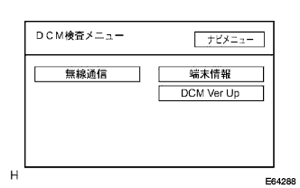

reference)reference)reference)
reference)reference)reference)G-BOOK system data communication module abnormal |
reference)reference)reference)| Step 1 | Phenomenon confirmation |
Make the procedure of confirmation according to the display message to confirm whether the defect is reproduced.
| Display message | Cause | Confirmation |
|---|---|---|
| It cannot be displayed because the line is crowded, etc. Please wait for a while before operation (*1) |
| After a while, change the place, operate again to confirm that the defect is reproduced. |
| We are preparing for communication. Please wait for a while (*2) | If you try to operate immediately after the power is turned on the in -vehicle aircraft, the system may be running (a negotiation with a browser up and a data communication module), and will be displayed at that time. | After a while, perform the operation again to confirm that the defect is reproduced. |
| Step 2 | Diagnostic activation |
Start diagnostic.(The point isreference)
| Step 3 | Wireless communication (radio wave conditions) |
Select "Inspection Menu".
Select "Navi Inspection" ".
 |
Select “DCM test”.
reference)|  |
Select "Wireless Communication".
 |
Check the result of the radio wave condition.
|
| ||||
| NG | |
| Step 4 | Telephone antenna single inspection |
Inspect the code portion of the telephone antenna visually and confirm that there is no sharp break or bend in the code.
|
| ||||
| OK | |
| Step 5 | Telemati Caseava replacement (data communication module) |
| ||
| Step 6 | Wireless communication (wireless communication test) |
|
Press the switch start switch.
Check the wireless communication test result.
|
| ||||
| OK | |
| Step 7 | G-BOOK Support Center Inquiry confirmation sheet fill in |
Enter the G-Book support center inquiry confirmation sheet.(The point isreference)
| ||